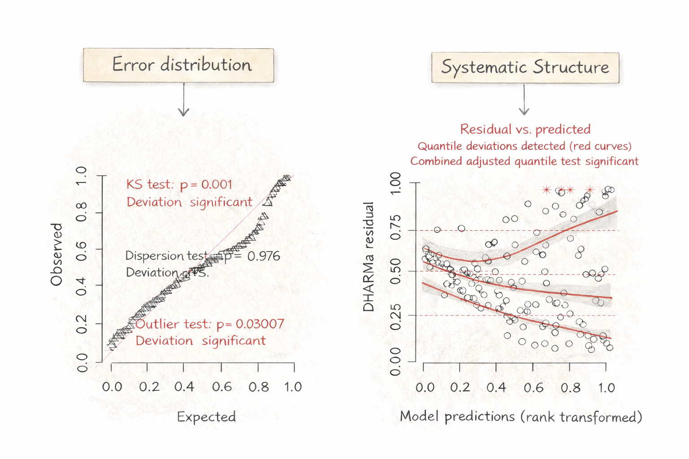

24 DHARMA diagnostics
24.1 Interpreting DHARMa residual diagnostic plots
A correctly specified model must ensure that both:
- The probabilistic assumptions (of the random Noise) are appropriate.
- The systematic structure captures the ecological Signal.
The DHARMa package is is powerful tool for assessing both of these components. Once you understand what DHARMa’s residual plots are indicating, the process of diagnosing issues with your model specification becomes less complicated. The plot of the simulated residuals in DHARMa has two panels, one for each of these two components:

Let us break this down to see what specific parts of a model each panel says something about:
24.1.1 Left panel: QQ Plot (Noise)
The left panel evaluates whether the chosen error distribution of the model is correct. This panel allows you to answer the question: If this model were the true data-generating process, would residuals be uniformly distributed?
| Component | What it means |
|---|---|
| Error distribution choice | Wrong family (Poisson, Gaussian, Gamma, etc.) |
| Link function | Incorrect transformation between mean and linear predictor |
| Dispersion parameter | Overdispersion or underdispersion not handled correctly |
| Zero-inflation | Excess zeros not modeled |
| Tail behavior | Heavy tails or skew not captured |
| Global variance structure | Variance magnitude inconsistent with assumed model |
| Excess extreme values | More outliers than expected under assumed distribution |
24.1.2 Right panel: Residuals versus predicted (Signal)
The right panel evaluates whether the systematic structure, or the signal, of the model is adequate.
| Component | What it means |
|---|---|
| Fixed effects | Incorrect or missing predictor(s) |
| Functional form | Relationship should be nonlinear |
| Interactions | Slope depends on another variable |
| Random effects structure | Missing grouping terms or random slopes |
| Link function | Mean structure not properly linked to response |
| Predictor-dependent variance | Heteroskedasticity not modeled |
| Autocorrelation | Spatial/temporal dependence not accounted for |
24.2 Improving your model: a decision-making framework
For warning flags in your DHARMa residual plots, consider following these guidelines:
24.2.1 Left panel: QQ Plot (Noise)
| Warning / Pattern | What It Indicates (Conceptually) | What Type of Problem Is This? | Questions to Ask | Possible Actions |
|---|---|---|---|---|
| KS test significant | Model cannot plausibly generate observed residual distribution | Distributional misspecification | Is the chosen family appropriate? Is the link correct? Are zeros excessive? | Try alternative family; reconsider link; evaluate zero-inflation |
| Dispersion test significant | Variance magnitude inconsistent with model assumptions | Global dispersion problem | Is variance uniformly too large/small across observations? | For counts: Poisson → Negative Binomial; add random effects; use quasi-likelihood |
| Dispersion test significant + structured residual spread visible in right panel | Variance changes systematically with predictors | Structured (predictor-dependent) dispersion | Does variance increase with mean or a predictor? | Use location–scale model (e.g., gaulss() in mgcv); model dispersion explicitly; consider transformation |
| Outlier test significant | More extreme values than expected under assumed distribution | Heavy tails or unmodeled heterogeneity | Are extremes biological? Data errors? Rare events? | Check data integrity; consider heavier-tailed distribution; add missing predictors |
| Systematic curvature in QQ line | Shape mismatch between assumed and actual error distribution | Tail or skew mismatch | Are upper/lower quantiles deviating more strongly? | Try alternative family; check transformation; reassess link |
24.2.2 Right panel: Residuals versus predicted (Signal)
| Warning / Pattern | What It Indicates (Conceptually) | What Type of Problem Is This? | Questions to Ask | Possible Actions |
|---|---|---|---|---|
| Combined quantile test significant | Residuals depend on fitted values | Mean structure misspecified | Did I miss nonlinearity? Interaction? Grouping? | Add spline; test interaction; add fixed or random effects |
| Curved median line | Incorrect functional form | Fixed effect structure problem | Is biology nonlinear? | Add smooth term; transform predictor |
| Diverging quantile bands | Residual variance changes with predictions | Structured variance (heteroskedasticity) | Does spread increase with mean or predictor? | Consider location–scale model; model dispersion; transform response |
| Pattern relative to a specific predictor | Omitted or mis-specified effect | Missing predictor or wrong specification | Does residual trend mirror ecological expectation? | Add predictor; allow nonlinear term |
| Vertical clustering of residuals | Unmodeled grouping or dependence | Random effects structure problem | Are observations clustered (site, time, individual)? | Add random intercepts; consider random slopes |
| Systematic pattern at extremes of predictions | Link function mismatch | Link misspecification | Is the mean–variance relationship appropriate? | Try alternative link |
24.3 DHARMa Model Diagnostic Decision Tree
If you would rather have a decision tree to help diagnose issues with your model, here is a three step guide. Click on each step for questions related to thes diagnosis.